5. 用户流程
5.1 员工提交建言
入口：H5/PC 信箱列表 → 点入口照片或标题 → 填写标题/内容/图片/可选匿名 → 点「提交」→ publishClientTopic 成功 toast「已提交」并关层；标题为空 toast「请填写标题」，弹层保持打开。
5.2 后台回复
入口：概览待回复「回复」或信箱详情建言标题/「详情」→ 建言详情「回复建言」选账号填内容点「确认」→ setChairmanReply 追加回复，message「已回复建言」。内容空校验「请输入回复内容」。账号必须是陈产品/论坛小助手/官方客服。
5.3 停用信箱
列表行「更多」里的停用，或详情页停用 → 确认弹窗 → setForumBoardStatus(..., 'disabled') → message「已停用」。文案写前台不可访问；C 端入口常量不读 status，待确认 停用后 C 端入口是否消失。信箱列表不再提供批量停用。
5.4 调整信箱顺序
列表行「上移」「下移」调用 moveForumBoard(id, -1|1)，只在相同 kind===mailbox 的记录之间互换位置。第一行上移、最后一行下移 disabled。无成功 toast。
6. 页面级需求说明
6.1 后台-概览
页面目标
看时间范围内信箱规模与回复进度，从待回复直接处理。
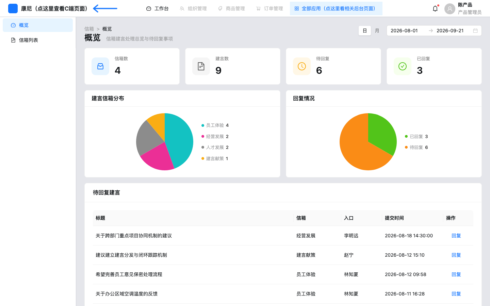
后台-概览-页面整体：默认日期从 2026-08-01 到当天；含 KPI、两张饼图、待回复表。
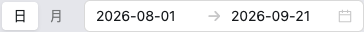
后台-概览-日期范围：日/月切换与近 7/30 天。改范围会重算 KPI、饼图、待回复行。
后台-概览-KPI指标卡：信箱数、建言数点击 onNavigate('mailbox-list')。待回复、已回复无点击。口径：已回复看 chairmanReply 是否有值，与 C 端「有回复数组即已回复」不完全同一。
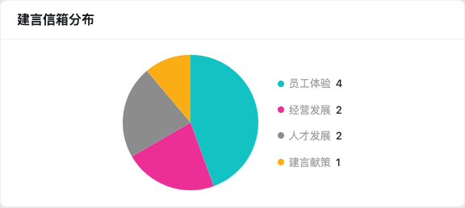
后台-概览-建言信箱分布：各信箱建言条数饼图。
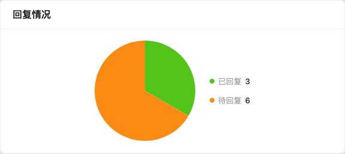
后台-概览-回复情况：已回复绿、待回复橙。
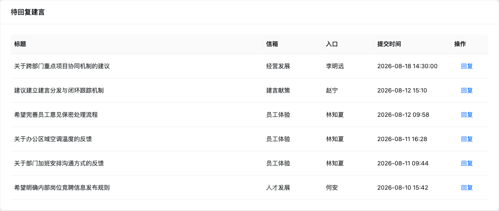
后台-概览-待回复建言：最多 8 条无 chairmanReply 的建言，按提交时间倒序。空态文案「暂无待回复建言」。
组件显示逻辑
| 组件路径 | 组件类型 | 默认状态 | 显示/隐藏逻辑 | 启用/禁用逻辑 | 数据来源 | 状态变化 | 空/错/加载状态 | 权限/条件控制 |
|---|
| 后台-概览-KPI指标卡 | 指标卡 | 显示四卡 | 始终显示 | 均可点，后两卡无跳转 | 内存 boards/topics + 日期 | 改日期重算 | 无独立 loading | 无角色分流 |
| 后台-概览-待回复建言 | 表格 | 有数据出表 | 无行则 Empty | 回复始终可点 | buildMailboxPendingRows | 回复后需刷新才离开待回复 | Empty | 无 |
操作说明
| 操作名称 | 组件路径 | 触发元素 | 前置条件 | 启用/禁用逻辑 | 用户动作 | 系统响应 | 状态变化 | 成功反馈 | 失败反馈 | 跳转/接口 |
|---|
| 回复 | 后台-概览-待回复建言-回复 | 链接按钮 | 行存在 | 始终启用 | 点击 | 进入建言详情 | 无列表侧即时移除 | 无 | 无 | 内存导航 advice-detail |
| 查看信箱列表 | 后台-概览-KPI指标卡-信箱数 | 卡片 | 无 | 始终启用 | 点击 | 进信箱列表 | 无 | 无 | 无 | mailbox-list |
验收标准
Given 默认种子与默认日期 When 打开概览 Then 可见 4 个信箱 KPI。Given 待回复行 When 点回复 Then 打开对应建言详情。
6.2 后台-信箱列表
页面目标
维护信箱主数据与启停。
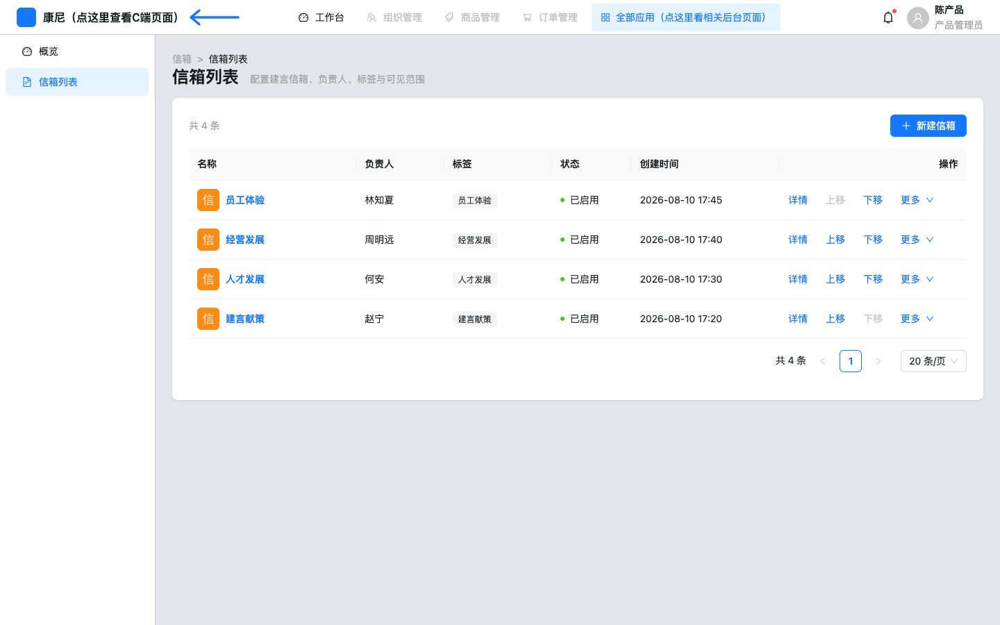
后台-信箱列表-页面整体：面包屑「信箱 / 信箱列表」。无勾选列、无横向滚动（tableLayout=fixed）。
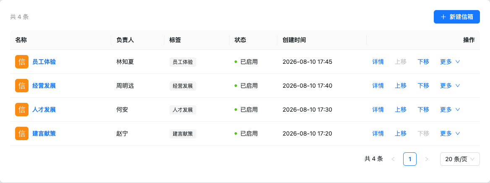
后台-信箱列表-工具栏：「共 N 条」+「新建信箱」。不出现已选择计数，不出现批量停用。
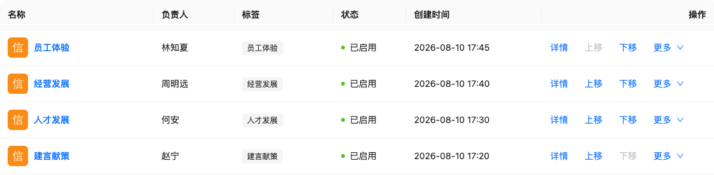
后台-信箱列表-列表表格：列：名称（图标+链接）、负责人、标签、状态、创建时间、操作。无选择列。分页 pageSize=20。
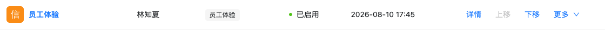
后台-信箱列表-行操作：actionsMaxVisible=3，外显「详情」「上移」「下移」。首行上移 disabled。
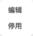
后台-信箱列表-更多菜单：溢出「编辑」「停用」。无「查看链接」。
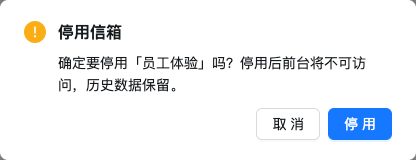
后台-信箱列表-停用确认：从更多菜单点停用后弹出。标题「停用信箱」，说明前台不可访问且保留历史。
字段说明
| 列名 | 组件路径 | 数据含义 | 格式 | 是否可排序 | 是否可筛选 | 行操作 |
|---|
| 名称 | 后台-信箱列表-列表表格-名称 | 信箱 name + icon | 链接 | 否 | 否 | 进详情 |
| 负责人 | 后台-信箱列表-列表表格-负责人 | board.manager | 文本 | 否 | 否 | — |
| 标签 | 后台-信箱列表-列表表格-标签 | board.tags | Tag，空为 — | 否 | 否 | — |
| 状态 | 后台-信箱列表-列表表格-状态 | enabled/disabled | Badge 已启用/已停用 | 否 | 否 | 停用/启用 |
| 创建时间 | 后台-信箱列表-列表表格-创建时间 | createdAt | YYYY-MM-DD HH:mm | 否 | 否 | — |
操作说明
| 操作名称 | 组件路径 | 触发元素 | 前置条件 | 启用/禁用逻辑 | 用户动作 | 系统响应 | 状态变化 | 成功反馈 | 失败反馈 | 跳转/接口 |
|---|
| 新建信箱 | 后台-信箱列表-工具栏-新建信箱 | 主按钮 | 无 | 始终 | 点击 | 打开表单页 | dirty 未保存离开会确认 | 无 | 无 | mailbox-create |
| 详情 | 后台-信箱列表-行操作-详情 | 链接/按钮 | 行存在 | 始终 | 点击 | 打开详情 | 无 | 无 | 无 | mailbox-detail |
| 上移 | 后台-信箱列表-行操作-上移 | 按钮 | 非第一行 | index<=0 时 disabled | 点击 | 同 kind 相邻互换 | 表格顺序变 | 无 toast | 越界返回 false 无提示 | moveForumBoard(id,-1) |
| 下移 | 后台-信箱列表-行操作-下移 | 按钮 | 非最后一行 | 末行 disabled | 点击 | 同 kind 相邻互换 | 表格顺序变 | 无 toast | 越界返回 false 无提示 | moveForumBoard(id,1) |
| 编辑 | 后台-信箱列表-更多菜单-编辑 | 更多菜单 | 行存在 | 始终 | 点击 | 打开编辑 | 无 | 无 | 无 | mailbox-edit |
| 停用 | 后台-信箱列表-更多菜单-停用 | 更多菜单 | status=enabled | 文案随状态切换 | 确认 | 写 disabled | Badge 变已停用 | message 已停用 | 无 | 内存 store |
6.3 后台-新建/编辑信箱
页面目标
创建或改信箱配置。编辑记录不存在显示 Empty「信箱不存在或已删除」。
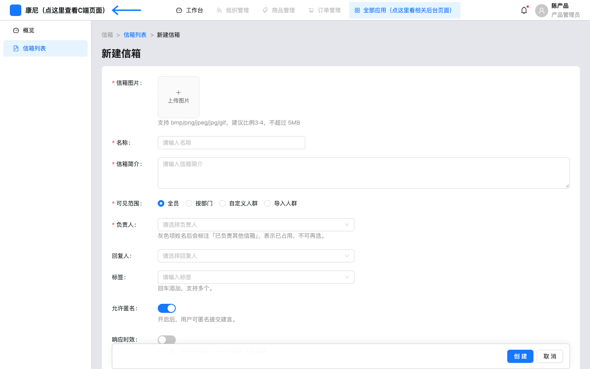
后台-新建信箱-表单页：标题「新建信箱」，底栏固定创建/取消。
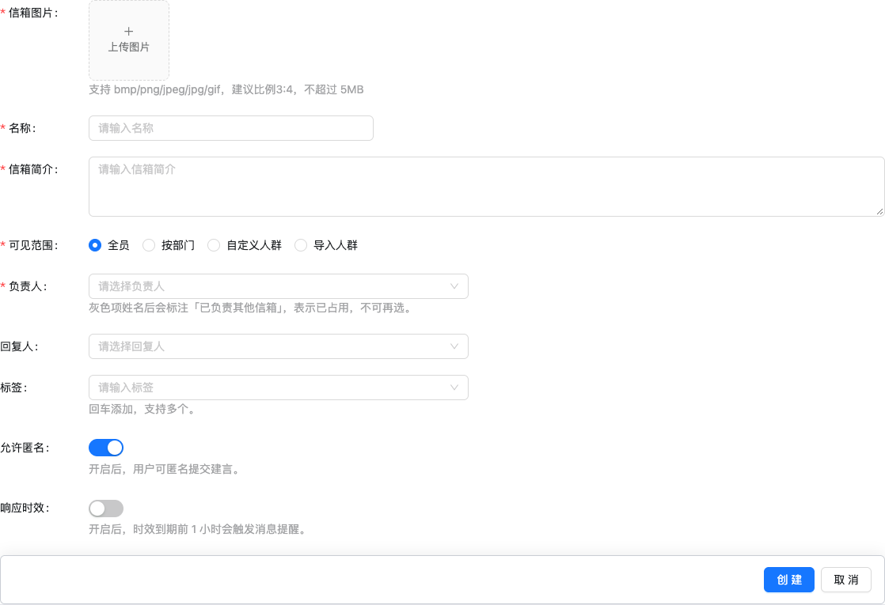
后台-新建信箱-图片与名称：信箱图片 picture-card，hint 3:4 ≤5MB；beforeUpload 返回 false，本地 FileReader 写入表单。名称 Input 必填。
后台-新建信箱-可见范围：全员 / 按部门 / 自定义人群 / 导入人群。
后台-新建信箱-按部门：选「按部门」出现部门 TreeSelect，必填。
后台-新建信箱-自定义人群：选「自定义人群」出现人员 TreeSelect，必填。
后台-新建信箱-导入人群：csv/xlsx 单文件 +「下载模板」。必填校验看 importFileName。模板为前端生成 CSV，无上传解析人数逻辑。
后台-新建信箱-响应时效：开关打开后出现 24h/48h/一周/不限时。extra 写到期前 1 小时消息提醒，代码无发送实现。
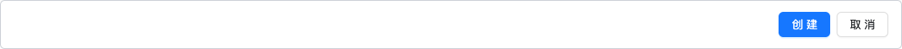
后台-新建信箱-底栏操作：创建走 validateFields + validateBoardDraft + saveForumBoard。取消：dirty 则「离开当前页？」确认。
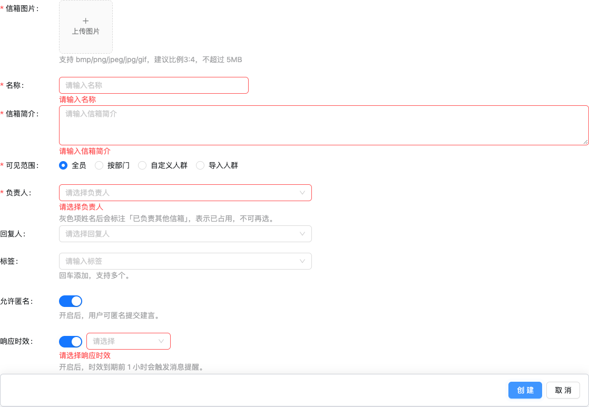
后台-新建信箱-校验错误：空表提交出现：请输入名称、请输入信箱简介、请选择负责人、请选择响应时效。图片必填是隐藏 icon 字段，此截图未出图片红字。
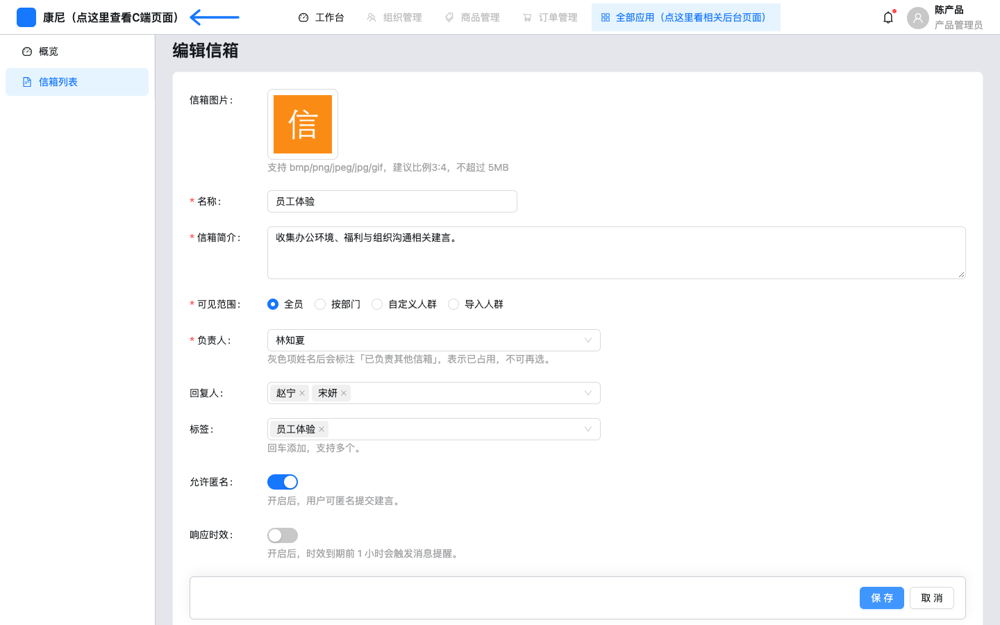
后台-编辑信箱-表单页：编辑员工体验：图片已回填，允许匿名默认开，响应时效未开。负责人 TreeSelect 单选；已被其他信箱占用的人 disabled 并标注「已负责其他信箱」。
字段说明
| 字段名称 | 组件路径 | 控件类型 | 是否必填 | 默认值 | 校验规则 | 选项值 | 业务含义 |
|---|
| 信箱图片 | 后台-新建信箱-图片与名称-上传 | Upload | 创建必填 | 空 | 请上传信箱图片 | bmp/png/jpeg/jpg/gif | 列表/详情缩略图 |
| 名称 | 后台-新建信箱-图片与名称-名称 | Input | 是 | 空 | 请输入名称；保存时名称不可与其他信箱重复 | 自由文本 | 信箱标识 |
| 信箱简介 | 后台-新建信箱-表单页-简介 | TextArea | 是 | 空 | 请输入信箱简介 | — | 后台详情展示；C 端入口简介未读此字段 |
| 可见范围 | 后台-新建信箱-可见范围 | Radio | 是 | 全员 | 请选择可见范围 | 全员/按部门/自定义人群/导入人群 | 组织范围文案 |
| 负责人 | 后台-新建信箱-表单页-负责人 | TreeSelect 单选 | 是 | 空 | 请选择负责人；一人不能负责两个信箱 | 组织树，占用项灰 | 列表「负责人」列 |
| 回复人 | 后台-新建信箱-表单页-回复人 | TreeSelect 多选 | 否 | 空 | 无 | 组织树人员 | 详情「回复人」 |
| 标签 | 后台-新建信箱-表单页-标签 | Select mode=tags | 否 | 空 | 回车添加 | 自由输入，非标签管理目录 | 列表 Tag |
| 允许匿名 | 后台-新建信箱-表单页-允许匿名 | Switch | 否 | 信箱默认 true | 无 | 开/关 | C 端是否显示匿名勾选 |
| 响应时效 | 后台-新建信箱-响应时效 | Switch+Select | 开启后必选 | 关 | 请选择响应时效 | 24h/48h/一周/不限时 | 详情展示；提醒未实现 |
交互规则
保存失败「信箱名称已存在」落到名称；「该负责人已配置到其他信箱」落到负责人。成功 message「已创建信箱」/「已保存信箱」并回列表。
6.4 后台-信箱详情
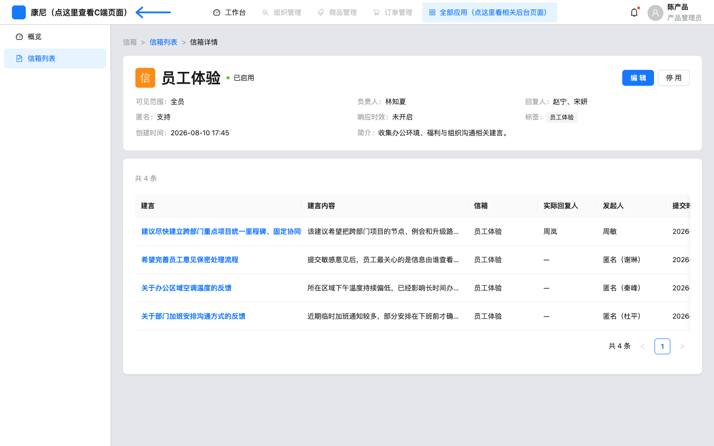
后台-信箱详情-页面整体：上半只读信息，下半嵌套该信箱建言表。
后台-信箱详情-标题与操作：图标、名称、状态；操作仅编辑、停用/启用。无查看链接。
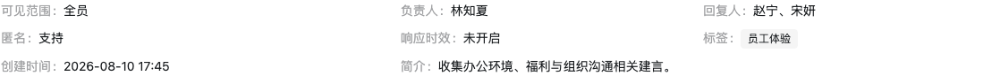
后台-信箱详情-信息描述：可见范围、负责人、回复人、匿名、响应时效、标签、创建时间、简介。无背景图项（论坛才有）。
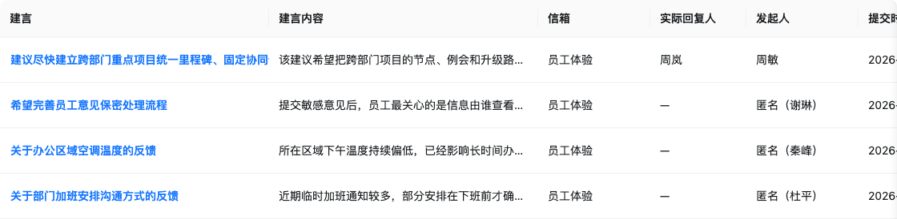
后台-信箱详情-建言列表：列：建言、建言内容、信箱、实际回复人、发起人、提交时间、操作（详情）。无指派/置顶/下架。
后台-信箱详情-空态：id 不存在：「信箱不存在或已删除」+ 返回信箱列表。
6.5 后台-建言详情
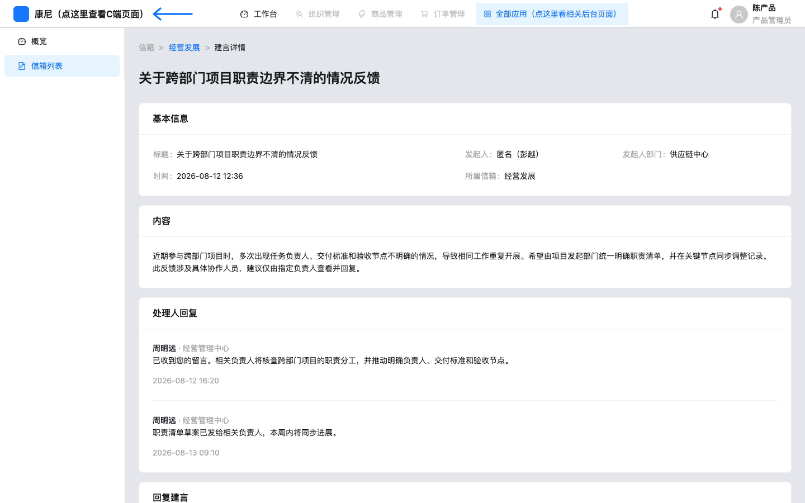
后台-建言详情-已回复-页面整体：经营发展种子建言：基本信息 + 内容 + 处理人回复 + 回复表单。无下架、无查看链接。
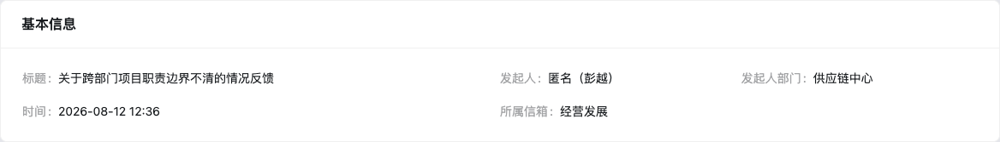
后台-建言详情-基本信息：标题、发起人、发起人部门、时间、所属信箱。匿名发起人按后台展示函数显示。
后台-建言详情-内容：正文；有图则 Image.PreviewGroup。
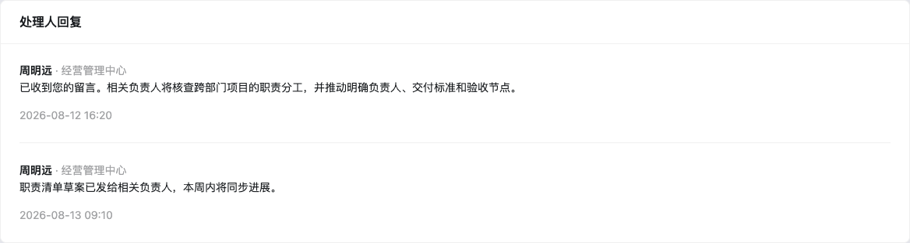
后台-建言详情-处理人回复：有 chairmanReplies/chairmanReply 才出此卡。展示回复人姓名·部门、内容、时间。
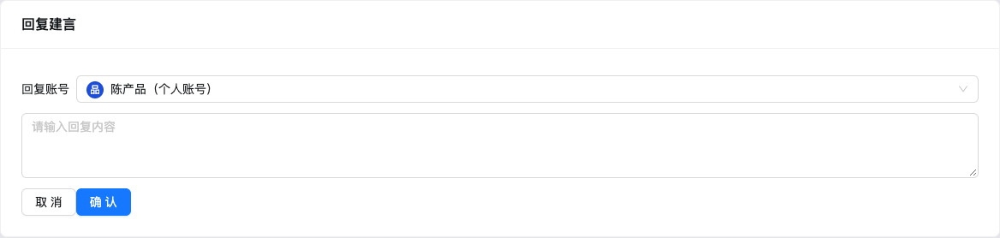
后台-建言详情-回复建言：回复账号默认陈产品（个人账号）；内容 TextArea maxLength=500，校验与 store 上限 FORUM_COMMENT_MAX=200。取消会 resetFields。
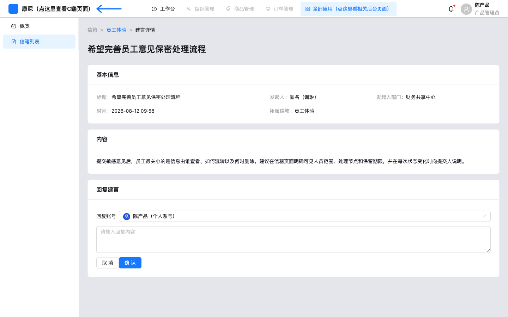
后台-建言详情-待回复-页面整体：无处理人回复卡，仅回复表单。
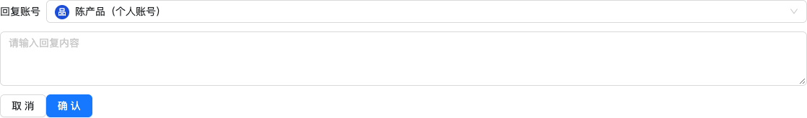
后台-建言详情-待回复表单：确认走 setChairmanReply；成功「已回复建言」。非法账号「请选择回复账号」。
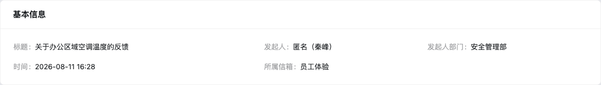
后台-建言详情-已驳回种子：auditStatus 可为已驳回，详情页未单独展示审核结果。C 端可见性会隐藏已驳回。
操作说明
| 操作名称 | 组件路径 | 触发元素 | 前置条件 | 启用/禁用逻辑 | 用户动作 | 系统响应 | 状态变化 | 成功反馈 | 失败反馈 | 跳转/接口 |
|---|
| 确认回复 | 后台-建言详情-回复建言-确认 | 主按钮 | 建言存在 | 始终 | 填内容点确认 | 追加 chairmanReplies | 最新一条写入 chairmanReply | 已回复建言 | 请输入回复内容 / 请选择回复账号 / 建言不存在 | setChairmanReply |
| 取消回复 | 后台-建言详情-回复建言-取消 | 按钮 | 无 | 始终 | 点击 | reset 表单 | 不清历史回复 | 无 | 无 | 无 |
6.6 H5-信箱列表
H5-信箱列表-页面整体：顶栏返回 + 标题「信箱列表」；两张入口卡；我的建言。返回调用 goH5Back。
H5-信箱列表-顶栏：无搜索、无 Tab。
H5-信箱列表-信箱卡片：MAILBOX_H5_DIRECTIONS：战略发展建言「李明远 · 经营管理中心」、员工体验建言「周岚 · 人力资源部」。不再显示「负责人 ·」。点照片或标题打开提交层。
H5-信箱列表-简介展开：purpose 长度≥70 才切换展开。员工体验简介约 75–85 字可展开；战略发展约 45–55 字无展开控件语义。
H5-信箱列表-我的建言：仅 author=周敏、boardName 属于 CLIENT_MAILBOX_BOARDS、未下架且审核非待审核/已驳回。展示标题、入口名、实名/匿名、状态、时间、摘要、图片。
H5-信箱列表-空建言：我的建言为空时文案「已有 N 条建言」，N=mailboxProposalCount（可见信箱建言总数，不限当前用户）。empty=1 预览把列表置空，故显示「已有 0 条建言」。不再使用「暂无建言」。
组件显示逻辑
| 组件路径 | 组件类型 | 默认状态 | 显示/隐藏逻辑 | 启用/禁用逻辑 | 数据来源 | 状态变化 | 空/错/加载状态 | 权限/条件控制 |
|---|
| H5-信箱列表-信箱卡片 | 入口卡 | 两张常显 | 写死，不读后台 enabled | 始终可点提交 | MAILBOX_H5_DIRECTIONS | 无 | 无空态 | 无登录判断 |
| H5-信箱列表-我的建言 | 列表 | 有则出列表 | empty 预览强制空数组 | 条目始终可进详情 | forumStore topics | 提交成功后出现新行 | 已有 N 条建言 | 列表仅当前用户；空文案 N 含全部可见建言 |
| H5-信箱列表-实名/匿名标 | 标签 | 按题显示 | board.anonymous 为假则隐藏 | 只读 | boards+topic.authorAnonymous | 提交时写入 | 无 | 跟信箱开关 |
6.7 H5-提交建言
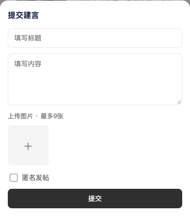
H5-提交建言-弹层：标题「提交建言」。填写标题、内容；上传最多 9 张；无标签区（tags=[]）。经营发展/员工体验种子 anonymous=true，故显示「匿名发帖」勾选（文案沿用论坛，未改成匿名建言）。
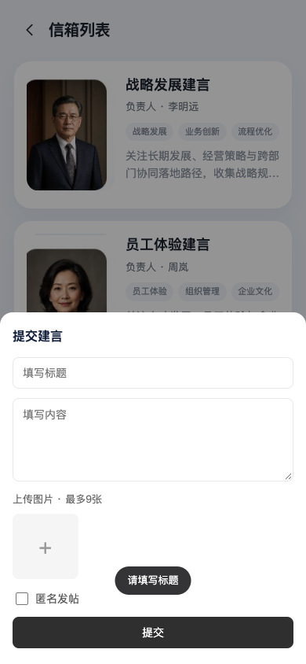
H5-提交建言-标题校验：空标题点提交，toast「请填写标题」2 秒，弹层不关。成功 toast「已提交」。失败其他文案同样 toast。
字段说明
| 字段名称 | 组件路径 | 控件类型 | 是否必填 | 默认值 | 校验规则 | 选项值 | 业务含义 |
|---|
| 标题 | H5-提交建言-弹层-填写标题 | input | 是 | 空 | trim 后空则请填写标题 | — | 建言标题 |
| 内容 | H5-提交建言-弹层-填写内容 | textarea | 否 | 空 | 可空 | — | 正文 |
| 图片 | H5-提交建言-弹层-上传图片 | file multiple | 否 | 空 | 最多 9 | image/* | 列表/详情图 |
| 匿名发帖 | H5-提交建言-弹层-匿名发帖 | checkbox | 否 | 未勾选 | 仅 allowAnonymous 显示 | 开/关 | authorAnonymous |
操作说明
| 操作名称 | 组件路径 | 触发元素 | 前置条件 | 启用/禁用逻辑 | 用户动作 | 系统响应 | 状态变化 | 成功反馈 | 失败反馈 | 跳转/接口 |
|---|
| 提交 | H5-提交建言-弹层-提交 | 底部按钮 | 弹层打开 | 始终 | 点击 | publishClientTopic，boardName 用入口常量，chairName 用入口 handler | 成功关层并刷新我的建言 | 已提交 | 请填写标题等 toast | 内存 store |
| 关闭 | H5-提交建言-弹层-遮罩 | scrim aria-label 关闭 | 弹层打开 | 始终 | 点遮罩 | onClose 不提交 | 草稿随卸载丢失 | 无 | 无 | 无 |
6.8 H5-建言详情
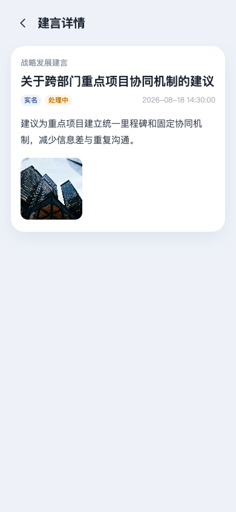
H5-建言详情-页面整体：顶栏返回列表。仅当建言属于当前用户可见集合才渲染。
H5-建言详情-内容卡片：入口名、标题、实名/匿名、状态（处理中/已回复/已驳回样式类）、时间、正文、图。有主席回复才出「回复」区。
H5-建言详情-不存在：id 不在「我的可见建言」显示「建言不存在」。他人建言、已驳回、下架均走此空态。
6.9 PC-信箱列表 / 提交
PC-信箱列表-页面整体：PcActivityShell 标题「信箱列表」，品牌回 C 端门户。模块与 H5 相同。
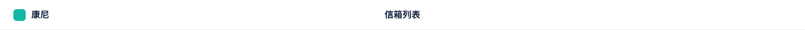
PC-信箱列表-顶栏：康尼品牌 + 标题。
PC-信箱列表-信箱卡片：同一套 MAILBOX_H5_DIRECTIONS，负责人同样是「姓名 · 部门」。
PC-信箱列表-我的建言：链接 toPcMailboxTopicHash。
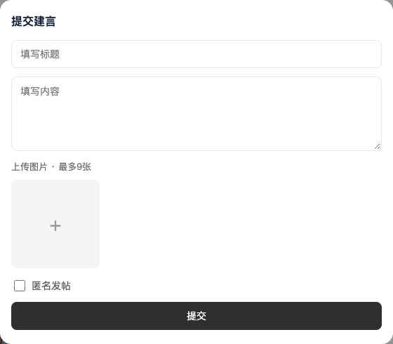
PC-提交建言-弹层：复用 H5ForumCompose，校验与提交逻辑同 H5。
PC-信箱列表-空建言：empty=1 显示「已有 0 条建言」，与 H5 同一函数。
6.10 PC-建言详情
PC-建言详情-页面整体：宽屏详情；有回复时绿色回复区。种子「员工体验」周敏建言带多图与多条回复。
PC-建言详情-内容卡片：字段与 H5 详情一致。
PC-建言详情-返回列表：headerActions「返回列表」链到 #/c/pc/mailbox。
PC-建言详情-不存在：文案「建言不存在」。